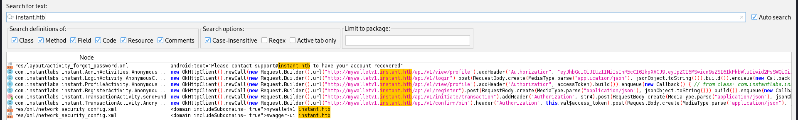

Instant

Instant was a fun box that involved reverse-engineering an Android APK to uncover API endpoints and an admin token. By leveraging Swagger UI, I used the token to enumerate users and exploit an endpoint that allowed arbitrary file reads. This led to the discovery of an SSH key, granting access as shirohige.
For privilege escalation, I found a database file containing user hashes, but cracking them was infeasible. Instead, I located an encrypted Solar-PuTTY backup file and decrypted it to retrieve root credentials. Using su, I escalated to root, completing the box.
This box highlighted the risks of exposed API endpoints, insecure file storage, and weak encryption practices.
User
An initial Nmap scan reveals only two open ports. SSH and HTTP.
Analyzing the .apk file
Navigating to the website, I found an .apk file available for download. I'll grab it and analyze its contents
I'll analyze the .apk file using jadx-gui, to see clearly whats inside and search for strings easily.

After a bit of searching, I've discovered two new subdomains and an admin token!
mywalletv1.instant.htb
swagger-ui.instant.htb
I'll add these two subdomains to my hostfile and begin my recon with Swagger UI.
Abusing endpoints
Swagger UI provides an interface for interacting with the API’s endpoints. If the admin token I found in the APK is valid, I should be able to leverage the available admin functions.
I'll start by using the 'List Users' function to enumerate users on the box and confirm that the token works
It worked! I can see that there are two users. Admin and shirohige. I'll try to get the credentials of shirohige via other functions of the API.
with the function "admin read log", I can read log files everywhere on the machine. However, after trying to abuse path traversal, I discovered that we are not limited to reading only .log files. I tried to scout for shirohige's credentials, but found nothing. Instead, I decided to try and hunt for his SSH key, so that I can SSH into the machine without his credentials.
It worked! Im now able to use this key to log in as shirohige into the box and claim the user flag!
chmod 600 id_rsa
The key cannot be accessible to others, otherwise SSH will throw an error. I'll change the permissions.

Root flag
After looking around for a while, I've found a database file in the projects/mywallet directory.

I'll copy it over to my machine using scp.
scp -i id_rsa shirohige@10.10.11.37:/home/shirohige/projects/mywallet/Instant-Api/mywallet/instance/instant.db .
Inside there are two users. Shirohige and admin, with hashes! However, admin's hash will not crack due to it being strongly hashed.

Decrypting the .dat file
Time to dive back in as shirohige! After a little bit of searching, I've stumbled upon an intersting file in opt/backups/Solar-PuTTY.
sessions-backup.dat
Looking at it on my machine, it seems to be encrypted.
Luckily, there is a tool made specifically for decrypting solar putty session files.
https://github.com/Dimont-Gattsu/SolarPuttyDecrypterPy.git
It cracked fast! Lets take a look at the outfile.

I got the root credentials! Now, I cant just SSH as the root user directly, but I can use su as shirohige inside the machine and login as root that way.

Rooted!